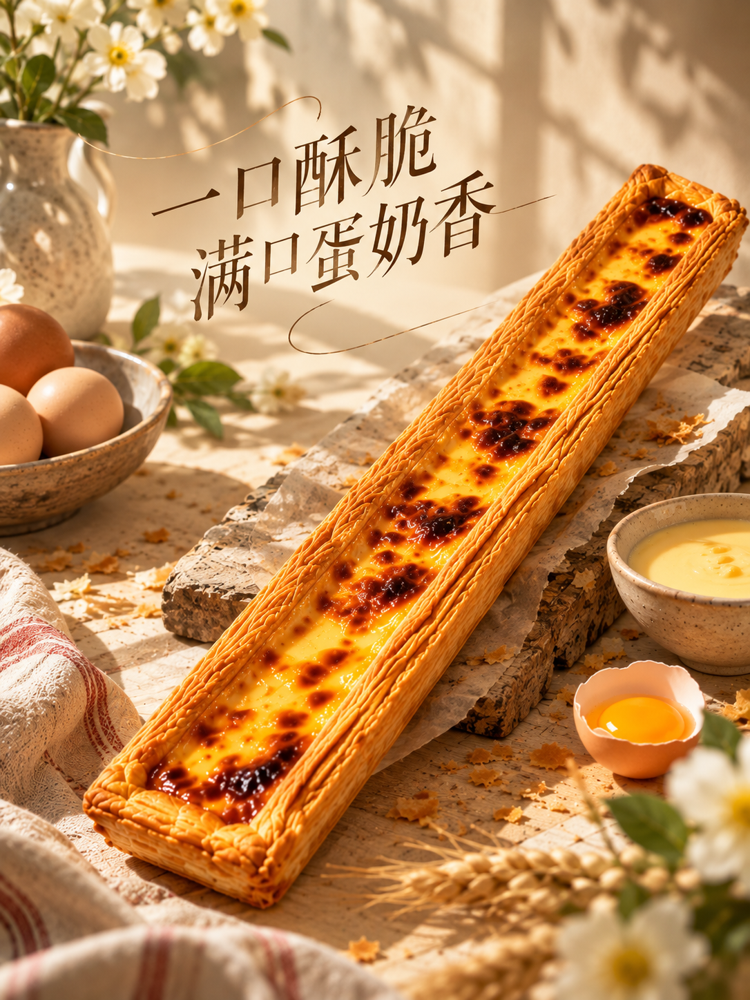
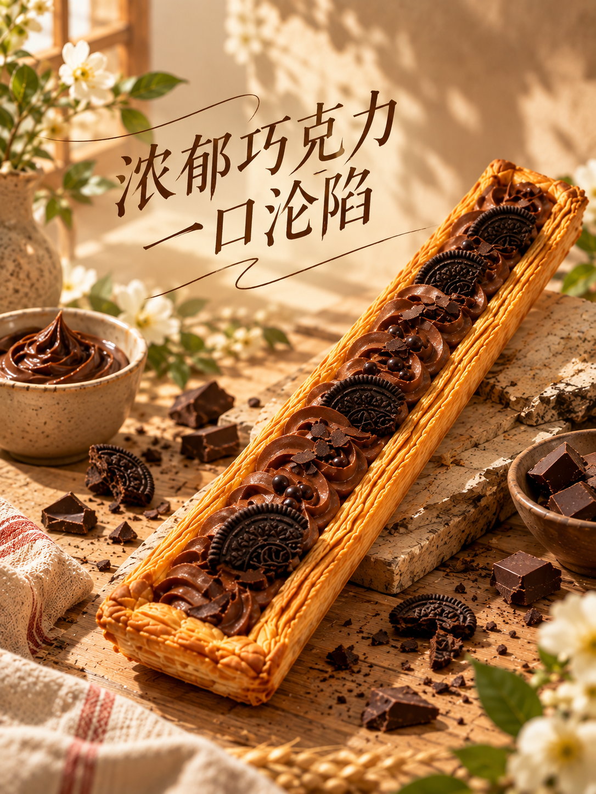
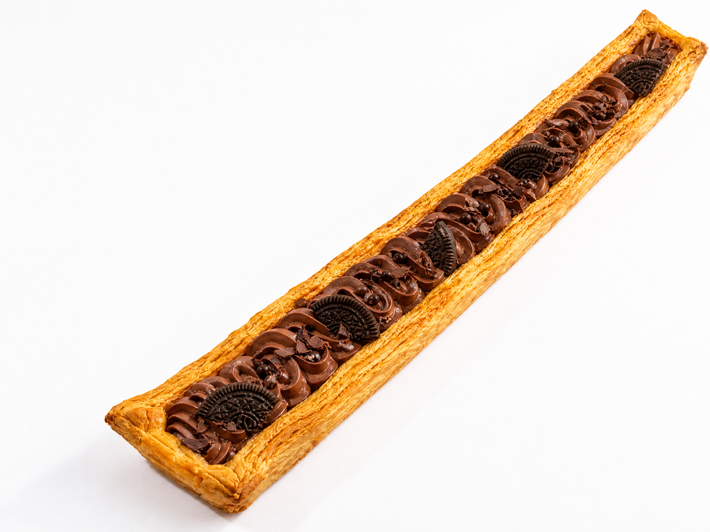
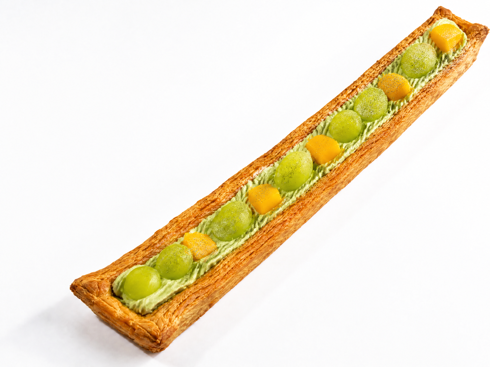
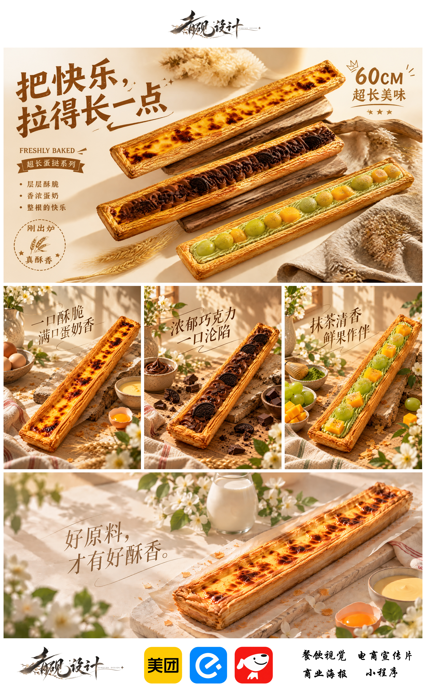

产品卖点与视觉方向
通过横向构图强调产品长度，以暖色自然光和食材环境强化酥脆、香浓的感受。三种口味使用统一视角和文字层级，保持系列一致性。
系列设计原图


产品场景原图


完整设计效果
将主视觉、系列口味图与应用方向集中呈现，作为项目的最终视觉总结。


通过横向构图强调产品长度，以暖色自然光和食材环境强化酥脆、香浓的感受。三种口味使用统一视角和文字层级，保持系列一致性。




将主视觉、系列口味图与应用方向集中呈现，作为项目的最终视觉总结。
